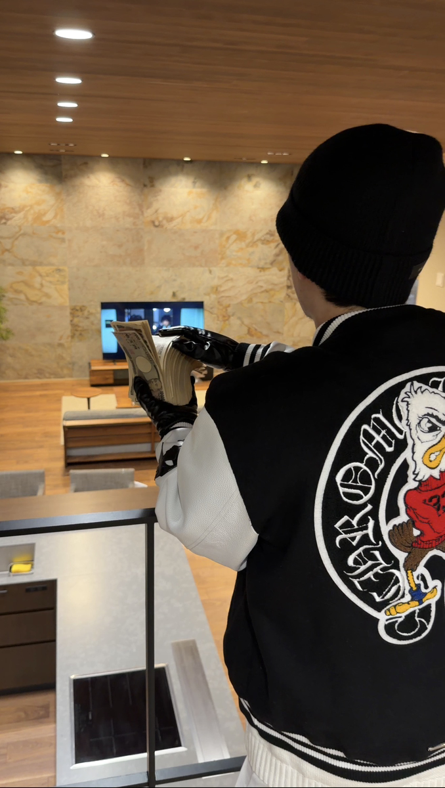
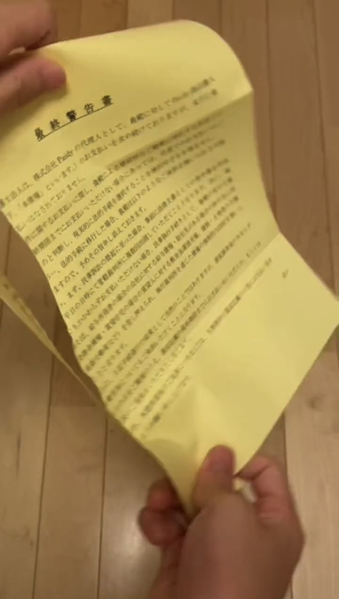
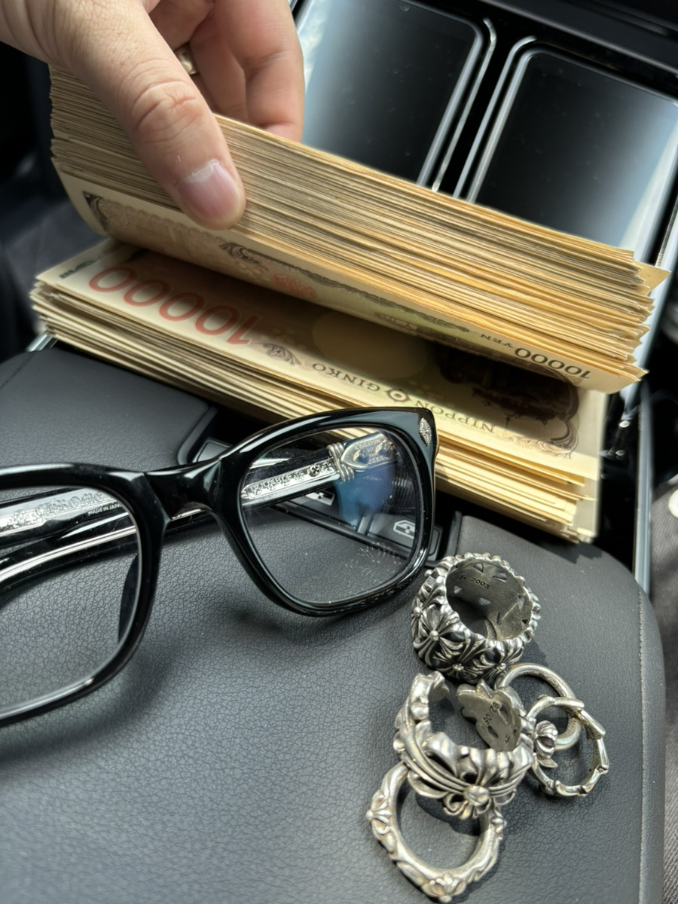
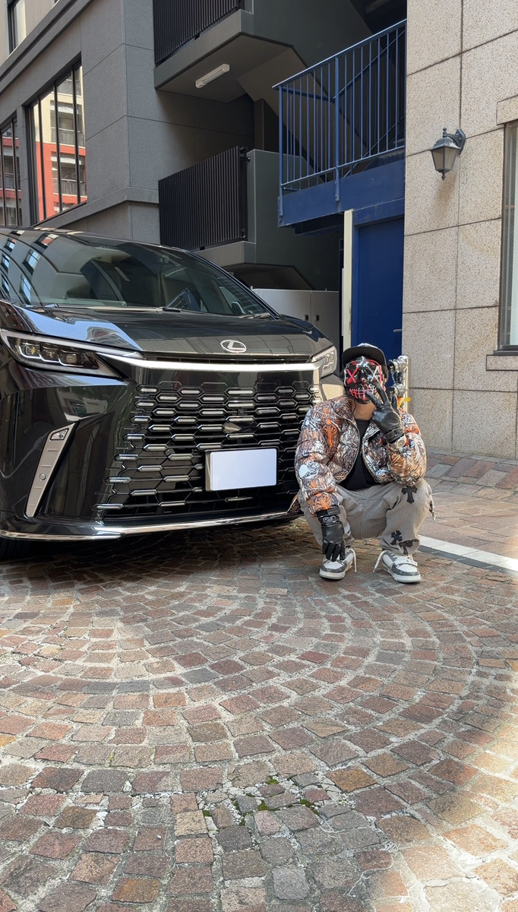
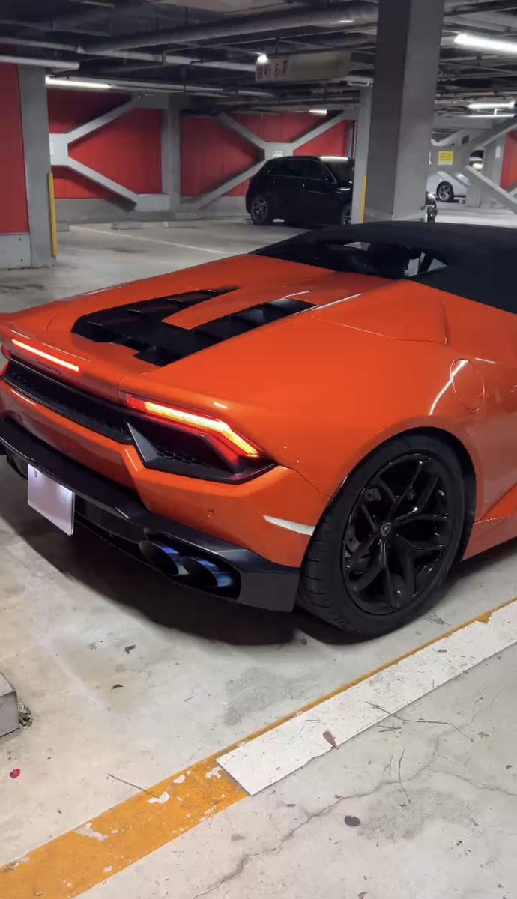
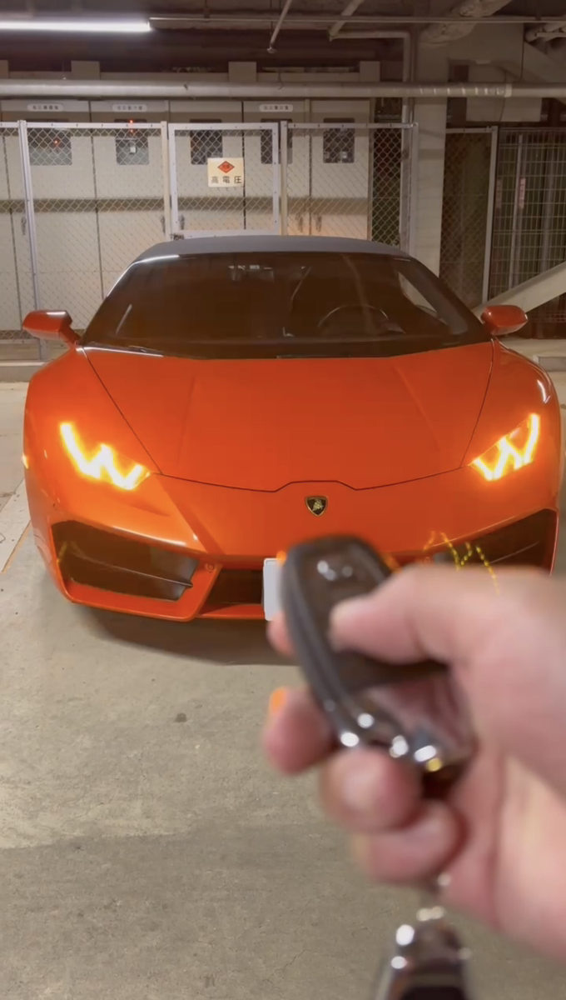
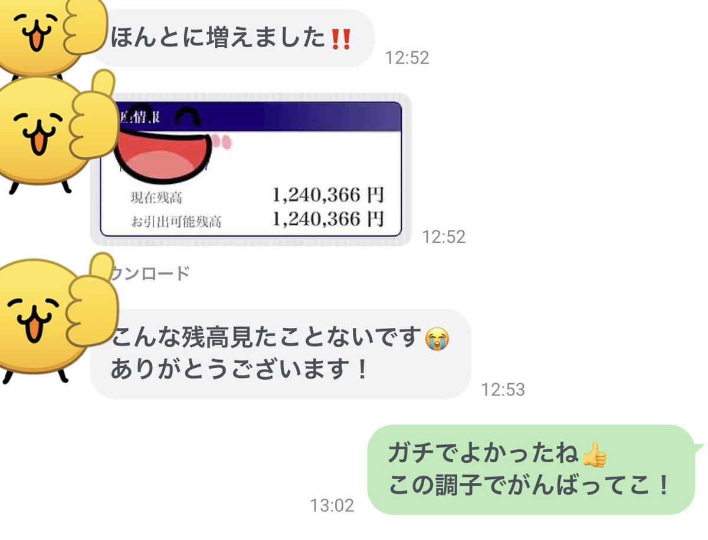
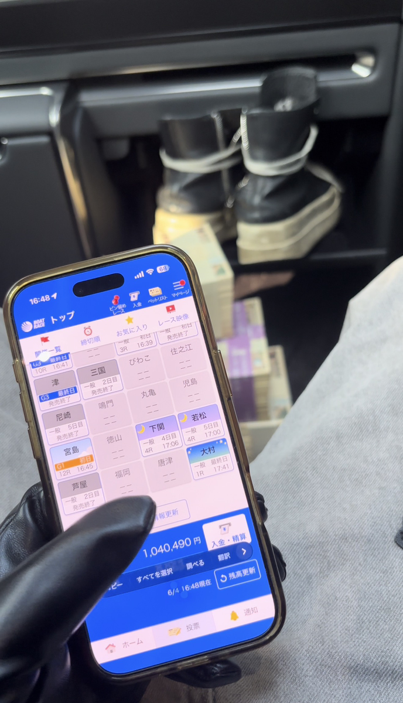
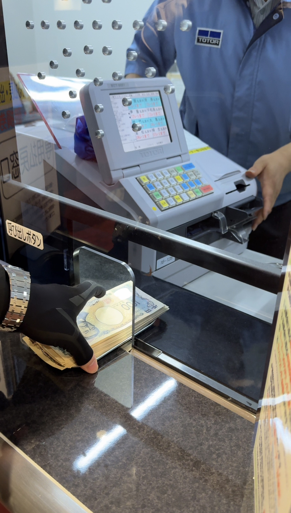

THEN負債 420万NOW資産 11億
01 / STORY
自己破産した時に、
人生が終わったんじゃない。
その前からもう生活は崩れていた
まかないで腹を満たして、
閉店後の床を磨いてた。
それでも支払いは追いつかなかった。

電気が止まった。水道が止まった。ガスも止まった。
02 / FAILED LOG
金がないより怖かったのは、
生活が止まっていくことだった。
生活が成り立っていなかった過去
PAYMENT
FAILED
FAILED
MONTHLY INCOME居酒屋バイトの手取り
¥200,000OUTSTANDING DEBT追いつかなくなった支払い
− ¥4,200,000AVAILABLE CARDSクレジットカード
作成不可LIFELINES / DISCONNECTED
電気STOP水道STOPガスSTOP
03 / TURNING POINT
戻れた理由は、
勝ち方を知ったからじゃない。
負ける行動を減らしたから

一番きつかったのは、
借金そのものじゃない。
焦って、
取り返そうとして、
普通の判断ができなくなることだった。
答えを急ぐ前に、先に見てほしい話です。
CONTINUE ON LINE焦ってる時ほど先に見るべき話をLINEで見る↗


SWIPE →
04 / RECORDS
戻れた証拠はある。
でも、見せたいのは自慢じゃない。
資産11億。
ランボ。
都内タワマン。
見せようと思えば、
派手なものはいくらでもある。
でも本当に欲しかったのは、
安心して眠れる夜だった。
05 / ACTIVITY
今もドン底の感覚は残ってる
資産が増えても、ランボに乗っても、
あの頃の感覚は消えてない。
そういう記録を、今も残してます。



SWIPE →
06 / JOIN
ドン底の時にこそ、
良き理解者を見つける
焦っている時ほど、
順番を間違える。
終わったと思った後でも、
見直せることはある。
昔の自分に先に渡したかった内容を、
LINEに置いてます。